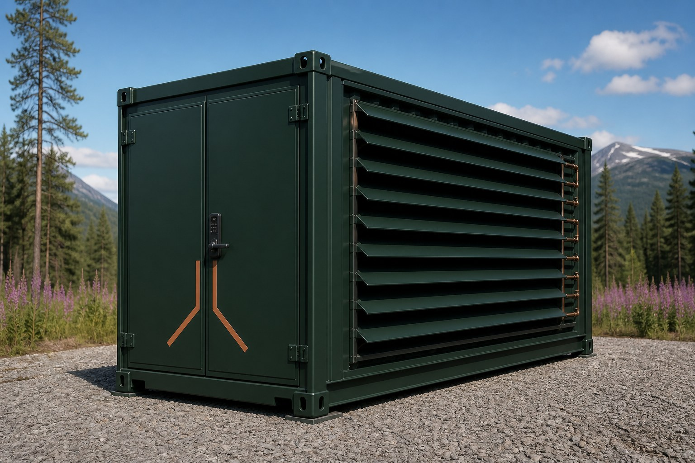
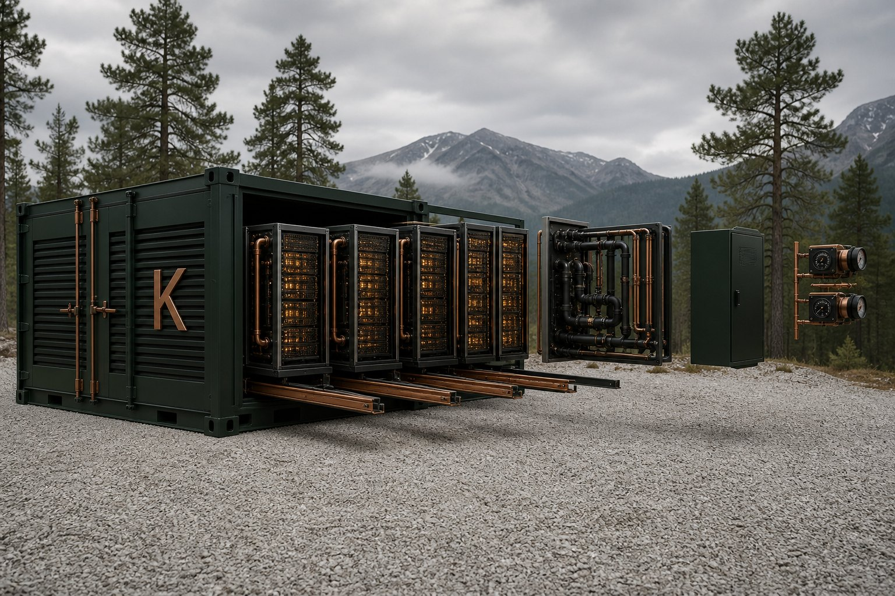
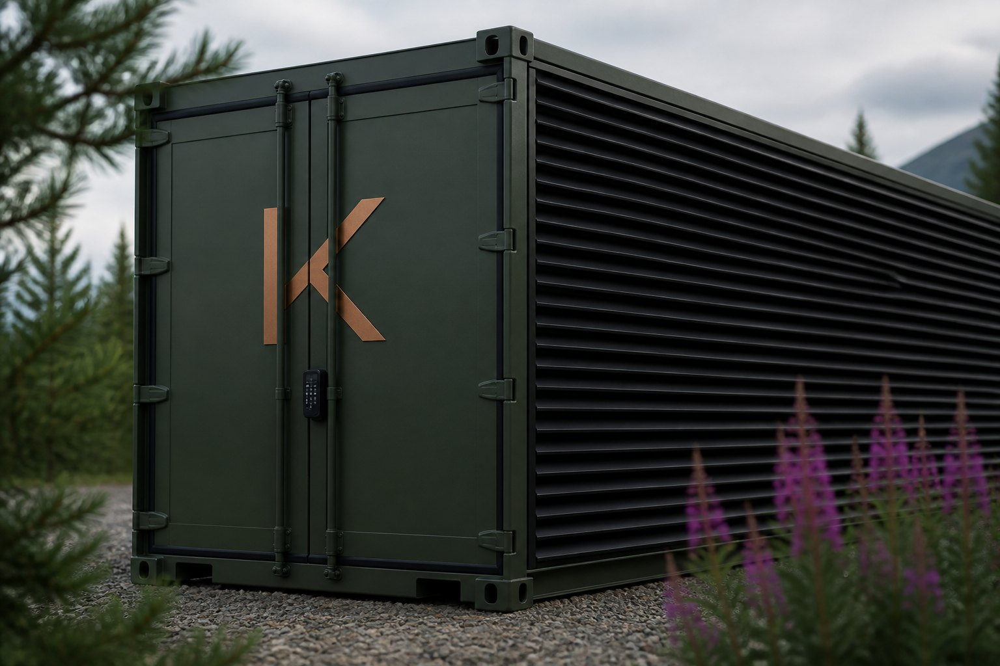
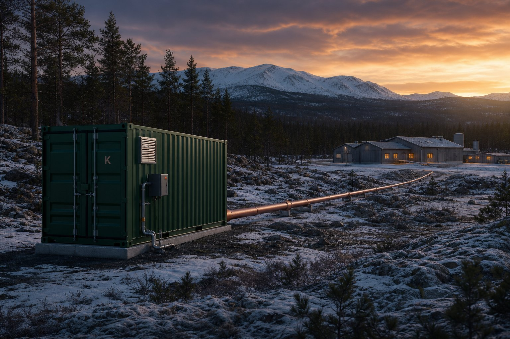

The workload
Interruptible batch: training, batch inference, simulation, rendering.
Compute
AI training and batch inference — interruptible HPC on a Flexbox at the surplus. Checkpoint in the contract.

Workloads
Interruptible loads on a Flexbox at the surplus.
AI
The load Kelvin is built for is interruptible AI.
Long runs that write a resume point. Queued inference that can wait a minute.
HPC
Same interruptible contract — jobs that can wait.
High-density runs and framesets that queue. Pause inside the window and resume.
Cloud
Capacity is on request.
Burst that can pause. Queued jobs that can wait.
Edge
Behind the meter at generation.
A Flexbox at the source. Extra grid load stays low.
Bitcoin
Not a treasury. Not a mining SKU.
One pause-able load. Same pause-and-resume as training.
Why it holds
Sit the job at the surplus — behind the meter or spare industrial.
01
The surplus is local. So is the job. Energy.
Locked-in surplus cannot be copied without that Energy.
02
Spare industrial or behind the meter at generation.
Extra grid load stays low.
03
Kelvin Compute AB. First plots in Hälsingland stay Plot.
Postal c/o only.
04
Compute, Flexibility-as-a-Service, and Thermal/Heat.
One connection. Three public products.
05
The job sits at the surplus. Not a remote campus on a queued feeder.
The job does not leave the Energy.
06
The module sits when the pad is ready.
Not a feeder queue.
The contract
Checkpointable means the job writes a resume point. When the grid calls, the job pauses inside the contract window and comes back.
01
Not a public product — it rides the megawatt. Interruptible HPC. First off, first on.
02
Async AI and queued inference. Pause inside the contract window. Cost of flexing is zero if the window is respected.
03
Checkpoint and resume — no lost work. Forgone training time, not an SLA breach. Semi-flex on the same Flexbox.
04
User-facing, latency-bound. Never curtailed.
Interruption windows are contracted per tenant — not a published Kelvin SLA. See Flexibility-as-a-Service.
The rack
A module at the surplus. Hardware, software, infrastructure — Compute, Flexibility and Thermal/Heat.
Power
Operating power tracks loaded server draw. Site-specific values confirmed in engineering.
Compute
Up to 336 servers. Air or liquid in the same 40 ft ISO. Stackable two-high on the same pad (≈2 MW / 672). 20 ft on request.
Dispatch
Built to start, pause and resume in well under a second. Flexibility-as-a-Service is in the contract.
Connect
Behind the meter or grid-connected. Heat capture designed in — Thermal.
Interruptible batch: training, batch inference, simulation, rendering.
Flexbox. Compute, Flexibility, Thermal/Heat. Cooling, power, ops, software, hardware, infrastructure. Air or liquid in the same 40 ft ISO. Control, dispatch, monitoring.
Not always-on colo. See Flexibility.
Cooling
The Flexbox packages high-density servers and forced-air or liquid cooling in a 40 ft ISO.

01
Forced air. Valid on plots that already run air. Heat capture still designed in — the flange ships with the unit, even when the first cooling is air.
02
Direct or closed-loop liquid. Liquid cooling is what makes the Heat stream recoverable at usable temperature — toward district supply. See Thermal grade.
03
Closed-loop on the unit. Four racks, Heat loop, 40 ft ISO. Grid (LV or MV) into the Flexbox; Heat flange out.
On the pad
One Flexbox on the pad — Compute, a controller, the Heat flange, the connection.
01 / 04
01 FB-40


The Flexbox. 40 ft ISO. ≈1 MW. Four racks — up to 336 servers. Air or liquid in the same box.
Ships as one module. Pre-tested.
01
Email is the conversation.
02
Ready with the pad. Not a feeder wait.
03
A campus waits on a queued feeder. A Flexbox sits where Energy already spills.
Back to the unit · Flexibility · Energy · Thermal · Home